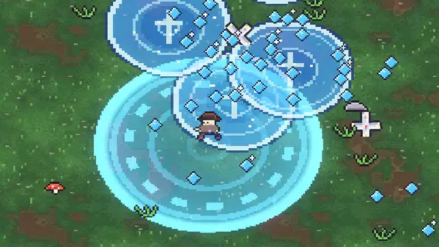
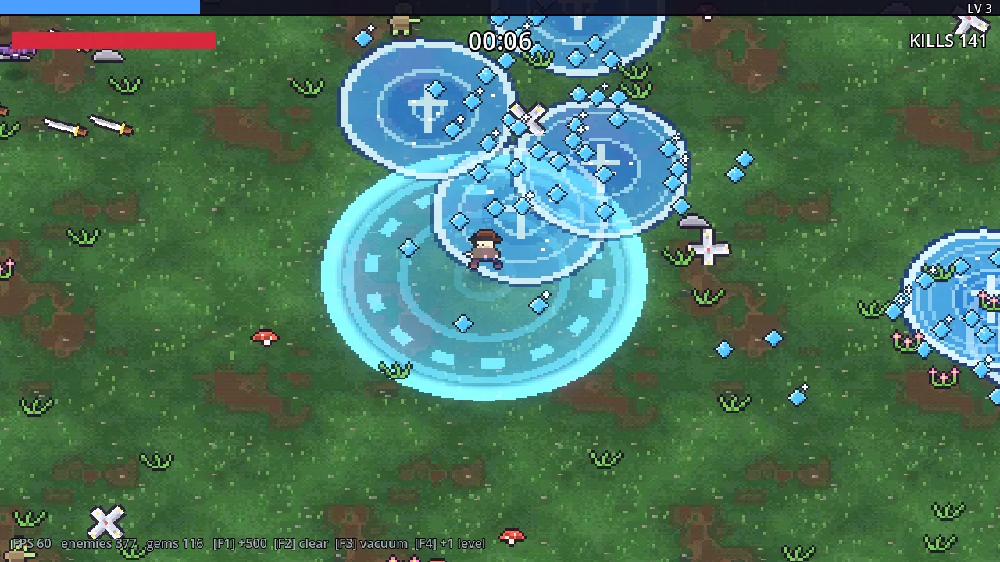

Senjata dan ProjectileField
Satu senjata menjadi lima: pisau yang dilempar lurus, manik yang mengorbit, vial yang dilempar melengkung dan meninggalkan kolam, salib yang memantul. Semua proyektil dari semua senjata hidup di satu tempat, ProjectileField.

Level senjata sebagai data
Fase 1 hanya punya max_level. Fase 3 mengganti itu dengan tabel: setiap level adalah Resource kecil WeaponLevel berisi selisih yang ditambahkan.
1class_name WeaponLevel
2extends Resource
3## What one weapon level adds on top of the previous ones. WeaponData.levels[0]
4## is level 2, levels[1] level 3, ... Deltas stack: Weapon sums every entry up
5## to its current level.
6##
7## damage / amount / pierce are flat; the rest are fractions of the base value
8## (0.1 = +10%, cooldown -0.1 = 10% faster).
9
10## Shown on the level-up card. Empty = generated from the numbers.
11@export var description := ""
12@export var damage := 0.0
13@export var area := 0.0
14@export var cooldown := 0.0
15@export var amount := 0
16@export var projectile_speed := 0.0
17@export var duration := 0.0
18@export var pierce := 033@export_group("Levels")
34## levels[0] = level 2 ... levels[n-1] = level n + 1.
35@export var levels: Array[WeaponLevel] = []
36
37var max_level: int:
38 get:
39 return levels.size() + 1
40
41
42## Text for the card offering `next_level` (2..max_level).
43func level_up_text(next_level: int) -> String:
44 var k := next_level - 2
45 if k < 0 or k >= levels.size():
46 return description
47 return levels[k].text()max_level bukan lagi angka yang diisi tangan, tapi diturunkan dari panjang tabel. Tidak mungkin lagi ada senjata yang mengaku 8 level tapi tabelnya hanya 6.
Di Inspector, levels tampil sebagai array; klik lalu isi. Hasilnya tersimpan sebagai sub-resource di file yang sama:
7
8[sub_resource type="Resource" id="Resource_lv2"]
9script = ExtResource("4_level")
10description = "+2 damage."
11damage = 2.0
12
13[sub_resource type="Resource" id="Resource_lv3"]
14script = ExtResource("4_level")
15description = "Aura grows 15% wider."
16area = 0.15
17
18[sub_resource type="Resource" id="Resource_lv4"]
19script = ExtResource("4_level")
20description = "Pulses 10% faster."
21cooldown = -0.1Setter level di Weapon menjumlah semua delta sampai level sekarang, sekali saja saat level berubah. Helper seperti area() lalu menggabungkan tiga sumber: base dari data, jumlah delta level, dan Stats pemain.
15var level := 1:
16 set(v):
17 level = clampi(v, 1, data.max_level)
18 _sum_levels()38func area() -> float:
39 return data.area * (1.0 + _area) * stats.value(Stats.Id.AREA)
40
41
42## area() relative to the base area: scale for sprites and secondary radii.
43func area_scale() -> float:
44 return area() / data.area
45
46
47func cooldown() -> float:
48 return data.cooldown * maxf(0.2, 1.0 + _cooldown) * stats.value(Stats.Id.COOLDOWN)
49
50
51func amount() -> int:
52 return data.amount + _amount + stats.int_value(Stats.Id.AMOUNT)
53
54
55func projectile_speed() -> float:
56 return data.projectile_speed * (1.0 + _speed) * stats.value(Stats.Id.PROJECTILE_SPEED)
57
58
59func duration() -> float:
60 return data.duration * (1.0 + _duration) * stats.value(Stats.Id.DURATION)var level := 1: diikuti blok set(v): membuat setiap penulisan w.level = 5 menjalankan kode. Dipakai di sini supaya cache _damage, _area, dst. tidak pernah basi. Di dalam setter, menulis level = … menyimpan nilai tanpa memanggil setter lagi.
ProjectileField
Kalau setiap pisau adalah node, Thornstorm (evolusi pisau, Fase 4) yang melempar kipas 5 pisau beberapa kali per detik akan membuat dan menghapus ratusan node per detik. Jadi proyektil memakai pola swarm: packed array paralel + satu MultiMesh, untuk semua senjata sekaligus.
16## Motion / behaviour flags.
17const ORBIT := 1 ## circles `center` (radius = orbit_r, vel = (angle, rad/s))
18const FACE_VELOCITY := 2 ## sprite points along its travel direction
19const BOUNCE_ENEMY := 4 ## after a hit, retarget the nearest unhit enemy
20const BOUNCE_SCREEN := 8 ## reflect off the edges of `view_rect`
21const NO_HIT := 16 ## visual only (e.g. a vial in flight)
22const ARC := 32 ## parabolic height over its lifetime
23
24const STRIDE := 16
25const CELL_WORLD := 18.0 / 16.0
26const HIT_MEMORY := 4
27const SHADER := preload("res://shaders/projectile.gdshader")
28
29
30## Spawn parameters; weapons keep one and refill it (no per-shot allocation).
31class Shot:
32 var pos := Vector2.ZERO
33 var vel := Vector2.ZERO
34 var orbit_r := 0.0
35 var life := 1.0
36 var damage := 1.0
37 var radius := 0.3
38 ## Enemies it may hit; -1 = unlimited. For BOUNCE_ENEMY each hit is a bounce.
39 var hits := 1
40 var knockback := 0.0
41 var rehit := 0.0
42 var size := 1.0
43 var row := 0
44 var spin := 0.0
45 var angle := 0.0
46 var glow := 1.0
47 var flags := 0
48 var source: Weapon- flagsPerilaku berbeda dikodekan sebagai bit flag dalam satu
int, bukan subclass. Salib =BOUNCE_ENEMY | BOUNCE_SCREEN; satu loop menangani semuanya denganif f & ORBIT. - ShotKelas dalam (
class Shot) berisi parameter spawn. Setiap senjata menyimpan satu objekShotdan mengisi ulang sebelumspawn(). Tidak ada alokasi per proyektil;spawn()menyalin nilainya ke array.
Contoh pemakaian paling sederhana, pisau Silverthorn:
43func _throw(game: Game) -> void:
44 var s := _shot
45 var aim := _aim.rotated(deg_to_rad(randf_range(-spread_degrees, spread_degrees)))
46 s.life = duration()
47 s.damage = damage()
48 s.radius = area()
49 s.hits = pierce() + 1
50 s.knockback = knockback()
51 s.size = ProjectileField.CELL_WORLD * sprite_scale * area_scale()
52 s.row = sprite_row
53 s.glow = 1.15
54 s.flags = ProjectileField.FACE_VELOCITY
55 s.source = self
56 var speed := projectile_speed()
57 for f in fan:
58 var dir := aim.rotated(deg_to_rad((f - (fan - 1) * 0.5) * fan_degrees))
59 s.pos = game.player.pos2 + dir * 0.4
60 s.vel = dir * speed
61 game.projectiles.spawn(s)Gerak dan hit
176## Move, hit, expire. `center` is the orbit centre (the player).
177func tick(dt: float, swarm: EnemySwarm, center: Vector2) -> void:
178 var i := 0
179 while i < count:
180 life[i] -= dt
181 if life[i] <= 0.0:
182 _remove_at(i)
183 continue
184 var f := flags[i]
185 var p: Vector2
186 if f & ORBIT:
187 var v := vel[i]
188 v.x += v.y * dt
189 vel[i] = v
190 p = center + Vector2(cos(v.x), sin(v.x)) * orbit_r[i]
191 else:
192 p = pos[i] + vel[i] * dt
193 if f & BOUNCE_SCREEN:
194 p = _bounce_screen(i, p)
195 pos[i] = p
196 if f & FACE_VELOCITY:
197 angle[i] = _screen_angle(vel[i])
198 else:
199 angle[i] += spin[i] * dt
200
201 if f & NO_HIT:
202 i += 1
203 continue
204 if rehit[i] > 0.0:
205 rehit_t[i] -= dt
206 if rehit_t[i] <= 0.0:
207 rehit_t[i] += rehit[i]
208 var m := i * HIT_MEMORY
209 for k in HIT_MEMORY:
210 memory[m + k] = 0
211 if _hit_enemies(i, swarm, center):
212 _remove_at(i)
213 continue
214 i += 1218func _hit_enemies(i: int, swarm: EnemySwarm, center: Vector2) -> bool:
219 var p := pos[i]
220 var f := flags[i]
221 for j in swarm.query_circle(p, radius[i]):
222 var u := swarm.uid[j]
223 if _remembers(i, u):
224 continue
225 _remember(i, u)
226 var dir: Vector2
227 if f & ORBIT:
228 dir = (swarm.pos[j] - center).normalized()
229 else:
230 dir = vel[i].normalized()
231 var src := source[i]
232 swarm.damage_enemy(j, src.roll_damage(damage[i]), dir * knock[i], src.last_crit, src)
233 if hits[i] > 0:
234 hits[i] -= 1
235 if hits[i] == 0:
236 return true
237 if f & BOUNCE_ENEMY:
238 _retarget(i, swarm)
239 return false
240 return false
241
242
243func _retarget(i: int, swarm: EnemySwarm) -> void:
244 var p := pos[i]
245 var best := -1
246 var best_d2 := INF
247 for j in swarm.query_circle(p, bounce_search_radius):
248 if _remembers(i, swarm.uid[j]):
249 continue
250 var d2 := swarm.pos[j].distance_squared_to(p)
251 if d2 < best_d2:
252 best_d2 = d2
253 best = j
254 if best >= 0:
255 vel[i] = (swarm.pos[best] - p).normalized() * vel[i].length()- hits
hits= sisa musuh yang boleh dikenai:pierce + 1. Nilai-1= tak terbatas (orbit, salib Radiant). UntukBOUNCE_ENEMYsetiap hit dihitung sebagai satu pantulan. - memoryProyektil yang menembus berada di dalam musuh selama beberapa frame. Tanpa ingatan, ia mengenai musuh yang sama setiap frame. Setiap proyektil menyimpan uid 4 musuh terakhir dalam ring buffer (
HIT_MEMORY = 4, array datarcapacity × 4). - uidKenapa uid dan bukan indeks slot? Karena swap-remove memindahkan musuh antar-slot (Bab 1). Fase 3 menambahkan
EnemySwarm.uid: nomor unik yang ikut pindah bersama musuhnya. - _retargetSetelah mengenai, salib mencari musuh terdekat yang belum diingat dalam radius 7, lalu membelokkan kecepatannya ke sana dengan laju yang sama.
Sudut di layar
Pisau harus menunjuk ke arah terbangnya. Tapi arah di tanah (x, z) tidak sama dengan arah di layar: kamera miring menyusutkan sumbu Z sebesar sin 50°. Jadi sudut layar dihitung dengan Z yang sudah disusutkan, dan shader proyektil memutar quad di bidang layar sebelum menariknya dengan y_stretch:
283## Screen-space angle of a ground direction (x right, z toward the camera).
284func _screen_angle(v: Vector2) -> float:
285 return atan2(-v.y * _screen_k, v.x)23 // Rotate in the quad plane first, then stretch: with the stretch undoing
24 // the camera pitch, the angle reads the same on screen.
25 float a = INSTANCE_CUSTOM.y;
26 float c = cos(a);
27 float s = sin(a);
28 VERTEX.xy = vec2(c * VERTEX.x - s * VERTEX.y, (s * VERTEX.x + c * VERTEX.y) * y_stretch);Tanda minus pada -v.y: Z positif menghadap kamera (ke bawah layar), sedangkan sudut layar positif berputar berlawanan jarum jam ke atas.
Orbit: Vesper Beads
Manik orbit tidak diintegrasikan dari kecepatan. vel.x dipakai sebagai sudut dan vel.y sebagai kecepatan sudut (rad/s); posisinya dihitung ulang tiap frame dari pusat (pemain). Lingkarannya tidak pernah melenceng walau pemain berlari.
25func tick(dt: float, game: Game) -> void:
26 var speed := projectile_speed()
27 _phase = fmod(_phase + speed * dt, TAU)
28 _timer -= dt
29 if _timer > 0.0:
30 return
31 var active: float
32 var start: float
33 if continuous:
34 _timer += refresh
35 # a few frames of overlap so the old set never vanishes before the new one
36 active = refresh + 0.05
37 start = _phase
38 else:
39 active = duration()
40 _timer += active + cooldown()
41 start = randf() * TAU
42 var n := amount()
43 var s := _shot
44 s.life = active
45 s.damage = damage()
46 s.radius = hit_radius * area_scale()
47 s.hits = -1
48 s.knockback = knockback()
49 s.rehit = data.hit_interval
50 s.size = ProjectileField.CELL_WORLD * sprite_scale * sqrt(area_scale())
51 s.row = sprite_row
52 s.glow = glow
53 s.flags = ProjectileField.ORBIT
54 s.source = self
55 for ring in rings:
56 var dir := 1.0 if ring % 2 == 0 else -1.0
57 var beads := n if ring == 0 else maxi(2, ceili(n * 0.5))
58 s.orbit_r = area() * pow(inner_ring_scale, ring)
59 for k in beads:
60 s.vel = Vector2(dir * start + TAU * k / beads, dir * speed)
61 s.pos = game.player.pos2
62 game.projectiles.spawn(s)s.hits = -1 (tidak pernah habis karena kena) dan s.rehit = data.hit_interval: memori hit dihapus setiap interval, jadi manik bisa mengenai musuh yang sama di putaran berikutnya.
Lob dan zona tanah: Hallowed Vial
Vial adalah dua benda: botol yang terbang (proyektil NO_HIT | ARC di ProjectileField, tingginya mengikuti parabola 4·h·t·(1−t) di upload()) dan kolam air suci di tanah. Kolam bukan proyektil: ia diam, besar, dan memberi damage berkala ke semua yang di dalamnya. Jadi senjata vial punya packed array dan MultiMesh-nya sendiri.
1extends Weapon
2## Hallowed Vial: lobs vials of holy water at random enemies on screen. Each
3## vial shatters into a pool (radius area(), lasting duration()) that damages
4## every enemy inside it every data.hit_interval.
5##
6## Font of Saints (evolution): each vial splashes into `splash_count` pools
7## that creep toward the player at `drift_speed`.
8##
9## The vial in flight is a NO_HIT | ARC projectile in the ProjectileField; the
10## pools are packed arrays drawn by this weapon's own MultiMesh (top_level, so
11## they stay on the ground while the player moves).
12
13const STRIDE := 16
14const DECAL_SHADER := preload("res://shaders/ground_decal.gdshader")
15const MAX_POOLS := 96
16
17@export var sprite_row := 3
18@export var flight_time := 0.55
19@export var target_range := 9.0
20@export var pool_sheet: Texture2D
21## Pool texture: circle diameter / texture width (art has a transparent border).
22@export var pool_fill := 46.0 / 48.0
23@export var splash_time := 0.12
24@export var fade_time := 0.35
25@export var splash_count := 1
26## Extra pools land this far (times area()) from the first one.
27@export var splash_spread := 1.1
28## World units / second toward the player; 0 = pools stay put.
29@export var drift_speed := 0.0
30
31var _timer := 0.3
32var _shot := ProjectileField.Shot.new()
33# Vials in flight: landing spot + seconds left.
34var _land_pos := PackedVector2Array()
35var _land_t := PackedFloat32Array()
36# Pools.
37var _count := 0
38var _pos := PackedVector2Array()
39var _life := PackedFloat32Array()
40var _life0 := PackedFloat32Array()
41var _radius := PackedFloat32Array()
42var _tick_t := PackedFloat32Array()
43var _phase := PackedFloat32Array()
44var _buf := PackedFloat32Array()
45var _mm: MultiMeshKarena senjata adalah anak pemain, MultiMesh kolam akan ikut bergerak bersama pemain. Supaya kolam tetap di tanah, MultiMeshInstance3D-nya diberi top_level = true: transformnya lepas dari induk. Kolam digambar dengan shader ground_decal.gdshader pada PlaneMesh rebah, bukan billboard.

Pantul di tepi layar
Salib memantul di tepi layar, bukan di tepi dunia (dunia tak terbatas). Game memberi ProjectileField persegi tanah yang terlihat setiap frame, dihitung dari ukuran kamera ortho:
55## Ground rect (x, z) visible around the rig, for the orthographic camera.
56func ground_view_rect() -> Rect2:
57 var vp := get_viewport().get_visible_rect().size
58 var half := Vector2(ortho_size * 0.5 * vp.x / vp.y,
59 ortho_size * 0.5 / sin(deg_to_rad(pitch_degrees)))
60 return Rect2(Vector2(global_position.x, global_position.z) - half, half * 2.0)Tinggi yang terlihat di tanah adalah ortho_size / sin(pitch): layar 13 unit, tapi karena tanah miring, yang terlihat di tanah ≈ 17 unit. Lebar mengikuti rasio jendela.
Resep menambah senjata
- Skrip
weapons/<nama>/<nama>_weapon.gdyangextends Weapondan meng-overridetick(dt, game). Baca angka hanya lewat helper (damage(),area(), …). - Scene
<nama>_weapon.tscn: root Node3D dengan skrip itu (tambahkan visual kalau perlu). data/weapons/<nama>.tres(WeaponData): ikon,scene, base stats, dan tabellevels.- Masukkan .tres ke
weaponsdidata/upgrade_pool.tres.
Tidak ada switch-case di Game, tidak ada daftar senjata di kode. Player.add_weapon() meng-instance data.scene dan Game memanggil tick pada setiap senjata.
- Tekan F5 (debug): semua senjata di pool masuk ke loadout di level maksimal.
- Pisau mengarah ke musuh terdekat dan sprite-nya menunjuk ke arah terbang. Salib memantul di tepi layar. Manik mengitari pemain dengan jarak tetap. Vial melengkung lalu meninggalkan kolam yang tetap di tempat saat kamu berjalan.
- Panel debug menunjukkan jumlah proyektil; ratusan proyektil tidak menurunkan FPS secara berarti.
- Pisau menembus satu musuh tapi memberi damage 20 kali. Hit memory tidak diisi, atau diisi dengan indeks slot (yang berubah) alih-alih uid.
- Kolam ikut berjalan bersama pemain. Lupa
top_level = truepada MultiMeshInstance3D kolam. - Pisau miring ke arah yang salah saat terbang ke atas/bawah layar. Sudut dihitung dari
atan2(v.y, v.x)tanpa-dan tanpa faktorsin(pitch). - Proyektil "menghilang" acak.
_remove_atlupa menyalin salah satu array (misalnyamemory), jadi proyektil yang dipindah membawa data proyektil lain.
- Tambahkan level 9 ke Silverthorn Knives yang memberi
+2 pierce, cukup lewat Inspector. Kartu level up akan menampilkan "+2 pierce" otomatis dariWeaponLevel.text(). - Ubah
HIT_MEMORYke 1 dan pakai Pilgrim's Cross di gerombolan padat. Apa yang terjadi pada salib yang memantul bolak-balik antara dua musuh? - Buat senjata baru "Censer Swing" yang setiap 2 detik menembakkan 8 proyektil melingkar (pakai
Vector2.from_angle(TAU * k / 8)).